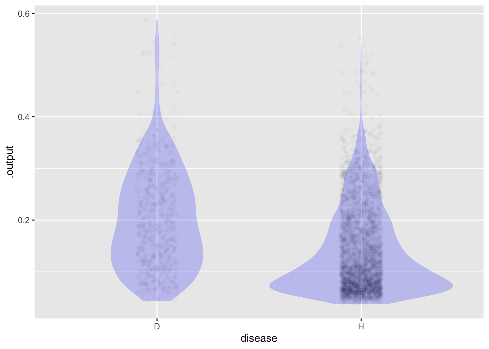

Framingham |>
summarize(mean(TenYearCHD))# A tibble: 1 × 1
`mean(TenYearCHD)`
<dbl>
1 0.152If you don’t have {ggmosaic} package: install_packages("ggmosaic")
Prevalence of CHD in development group:
Framingham |>
summarize(mean(TenYearCHD))# A tibble: 1 × 1
`mean(TenYearCHD)`
<dbl>
1 0.152Prevalence in actual population: Let’s say 2%.
In the last class, we looked at different explanatory variables.
mod <- glm(TenYearCHD ~ age + diabetes + totChol,
data=Framingham, family=binomial)
Scores <- model_eval(mod, interval="none") |>
mutate(disease=ifelse(.response == 1, "D", "H"))The score is in the .output column.
head(Scores) .response age diabetes totChol .output .resid disease
1 0 39 not 195 0.06008126 -0.06008126 H
2 0 46 not 250 0.10538177 -0.10538177 H
3 0 48 not 245 0.11906918 -0.11906918 H
4 1 61 not 225 0.25257802 0.74742198 D
5 0 46 not 285 0.11144294 -0.11144294 H
6 0 43 not 228 0.08332748 -0.08332748 Hggplot(Scores, aes(x=disease, y=.output)) +
geom_jitter(alpha=.02, width=.1, height=0) +
geom_violin(alpha=.2, color=NA, fill="blue")
Pick a tentative threshold. We will compare among the different groups.
my_threshold <- 0.15The next three chunks are named so that we can easily refer to them.
Scores <- Scores |>
mutate(test = ifelse(.output > my_threshold, "Pos", "Neg"))
# in "narrow" data frame
Counts <- Scores |>
group_by(disease, test) |>
tally() Counts# A tibble: 4 × 3
# Groups: disease [2]
disease test n
<chr> <chr> <int>
1 D Neg 226
2 D Pos 409
3 H Neg 2247
4 H Pos 1306# in "wide" data frame
Counts |>
tidyr::pivot_wider(names_from=test, values_from=n)# A tibble: 2 × 3
# Groups: disease [2]
disease Neg Pos
<chr> <int> <int>
1 D 226 409
2 H 2247 1306# as the canonical table
Scores |>
ggplot() +
geom_mosaic(aes(x=product(disease), fill=test))Warning: `unite_()` was deprecated in tidyr 1.2.0.
ℹ Please use `unite()` instead.
ℹ The deprecated feature was likely used in the ggmosaic package.
Please report the issue at <]8;;https://github.com/haleyjeppson/ggmosaichttps://github.com/haleyjeppson/ggmosaic]8;;>.
## Calculate sensitivity and specificity
Counts |> group_by(disease) |>
mutate(prob = n/sum(n))# A tibble: 4 × 4
# Groups: disease [2]
disease test n prob
<chr> <chr> <int> <dbl>
1 D Neg 226 0.356
2 D Pos 409 0.644
3 H Neg 2247 0.632
4 H Pos 1306 0.368Add the results to shared graph of ROC curve.
Multiply the counts in the “D” group by 2% / 15.2%.
For the sake of visibility, we won’t do that here because the numbers get harder to see.
Counts$cost = c(10,0,0,1)
Counts |> ungroup() |> summarize(total_cost = sum(n*cost))# A tibble: 1 × 1
total_cost
<dbl>
1 3566Set your candidate for a threshold, then run the three named chunks
my_threshold <- 0.15
# adjust for true prevalence (not being done here)
## Calculate sensitivity and specificity
Counts |> group_by(disease) |>
mutate(prob = n/sum(n))# A tibble: 4 × 5
# Groups: disease [2]
disease test n cost prob
<chr> <chr> <int> <dbl> <dbl>
1 D Neg 226 10 0.356
2 D Pos 409 0 0.644
3 H Neg 2247 0 0.632
4 H Pos 1306 1 0.368Counts$cost = c(10,0,0,1)
Counts |> ungroup() |> summarize(total_cost = sum(n*cost))# A tibble: 1 × 1
total_cost
<dbl>
1 3566